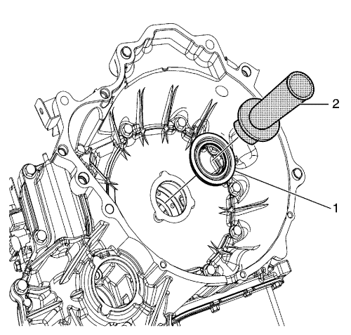
Nota:
| • | No vuelva a usar el retén de aceite. |
| • | Ponga grasa en el labio del retén de aceite. |
| • | Al montar el retén de aceite, éste debe estar a nivel con la superficie de la campana del convertidor. |
- Monte la junta de aceite del eje primario (1) en la carcasa del convertidor usando la herramienta de montaje para juntas de aceite del eje primario DT-47533 (2).
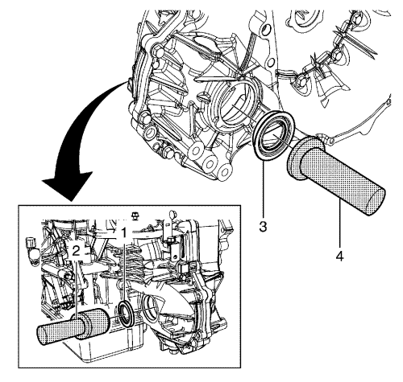
Nota:
| • | No vuelva a usar el retén de aceite. |
| • | Ponga grasa en el labio del retén de aceite. |
| • | Empuje el retén de aceite hasta el final. |
- Monte la junta del semieje de la rueda delantera izquierda (1) y la junta del semieje de la rueda delantera derecha (3) usando la herramienta de juntas DT-47535 (2) y la herramienta de juntas DT-47534 (4).
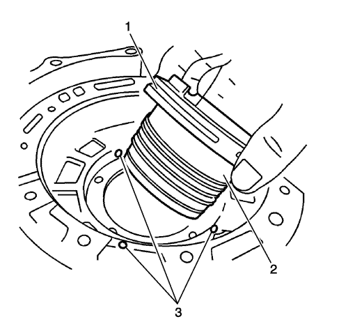
Nota: Alinee dos de las tres entradas de aceite (3) del lado del cárter del aceite con el corte para entrada de aceite (1) del soporte de apoyo del piñón secundario (2).
- Monte el conjunto del piñón secundario con la carcasa del convertidor mirando hacia arriba.
Atención: Consulte Atención - fijaciones en la sección Prólogo
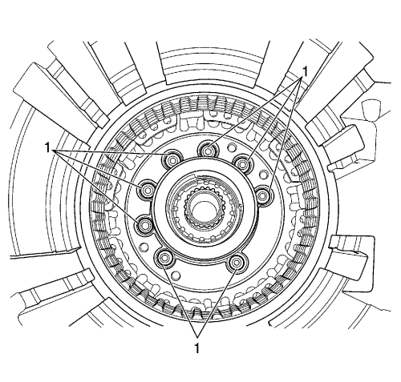
Nota: Apriete los pernos de montaje diagonalmente de forma uniforme.
- Con el montaje de la tapa lateral hacia arriba, monte los pernos de montaje del soporte del cojinete de piñón secundario (1) y apriete a 7 N·m (62 lib. pulg.).
Nota: Aplique ATF al anillo de junta para poder instalar fácilmente el embrague de baja.
- Monte los 2 anillos de junta NUEVOS.
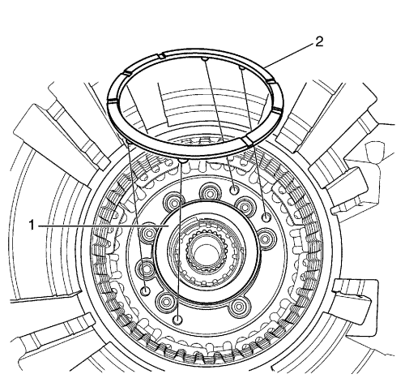
- Monte el cojinete (1) y la arandela de empuje (2) en el piñón secundario.
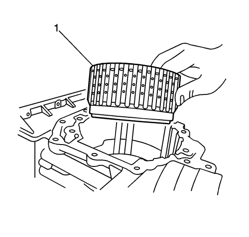
- Monte el conjunto del embrague de baja (1) de forma que se acople con los discos de freno de marcha atrás y baja.
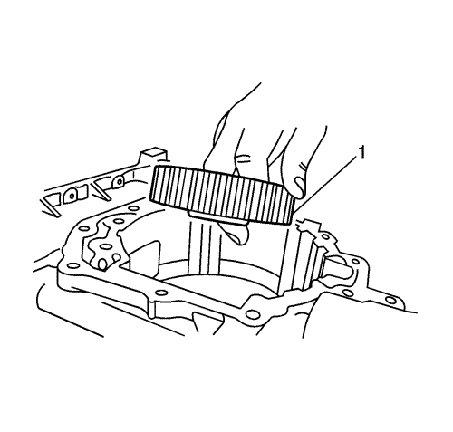
Nota:
| • | Al montar el engranaje interno, tenga cuidado de no pillar el anillo de Teflon de la pista interior del lado de la carcasa. |
| • | Asegúrese de montar en la parte inferior del embrague de baja. |
| • | Tenga cuidado de que no se caiga el cojinete. |
- Acople el cojinete al lado de la tapa lateral y el cojinete de pista combinada al lado del convertidor de par del engranaje interno trasero (1) con vaselina, y monte el engranaje interno trasero de modo que engrane con los platos del embrague de baja.
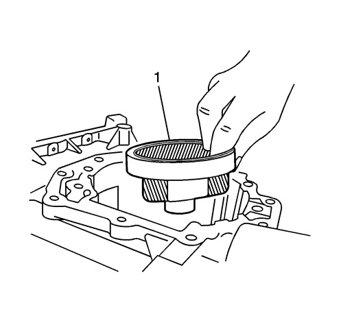
Nota: Tenga cuidado de que no se caiga la pista del cojinete.
- Acople el cojinete al lado de la tapa lateral y la pista al lado del motor del conjunto del portasatélites trasero (1) con vaselina, y monte el conjunto del portasatélites trasero de modo que engrane con el engranaje interior.
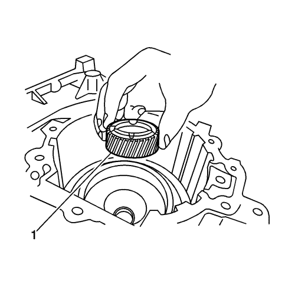
Nota: Tome nota de la dirección del engranaje central trasero.
- Monte el engranaje central trasero (1) en el conjunto del portasatélites trasero con la cara pulida mirando hacia abajo.
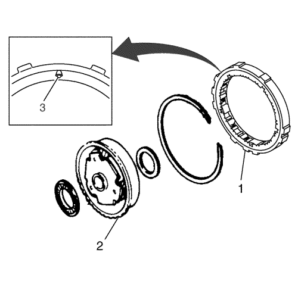
Nota: Tras el montaje, asegúrese de que el embrague gira sin problemas en sentido de las agujas del reloj y se bloquea en el sentido contrario.
- Monte el embrague unidireccional de baja (1) en el portasatélites delantero (2) de cara a los cierres (3) de la placa lateral al convertidor de par.
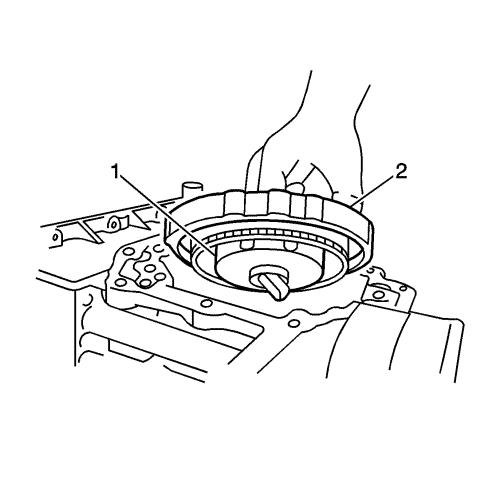
Nota: Asegúrese de que la estría de la periferia del portasatélites delantero está engranada con la del embrague de baja. Asegúrese de que el embrague unidireccional de baja está a nivel con la parte superior del portasatélites delantero.
- Acople los cojinetes al lado de la tapa lateral y el cojinete de pista combinada al lado del convertidor de par del portasatélites delantero (1) con vaselina, y monte el portasatélites delantero (1) y el embrague unidireccional de baja (2) como un conjunto, siguiendo la guía de la carcasa.
- Monte el anillo elástico.
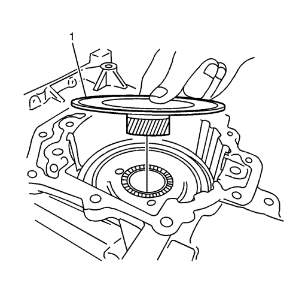
- Acople el cojinete al lado de la tapa lateral y la pista al lado del convertidor de par del conjunto del engranaje central delantero (1) con vaselina, y monte el conjunto en el portasatélites delantero.
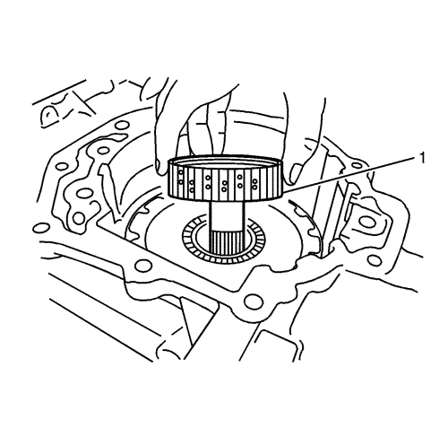
Nota: El cojinete que ha de montarse en el cubo tiene un diámetro más pequeño. Asegúrese de colocarlo en el centro.
- Acople el cojinete al lado de la tapa lateral del cubo del embrague de alta (1) con vaselina, y monte el cubo de embrague de alta (1) al conjunto del engranaje central delantero.
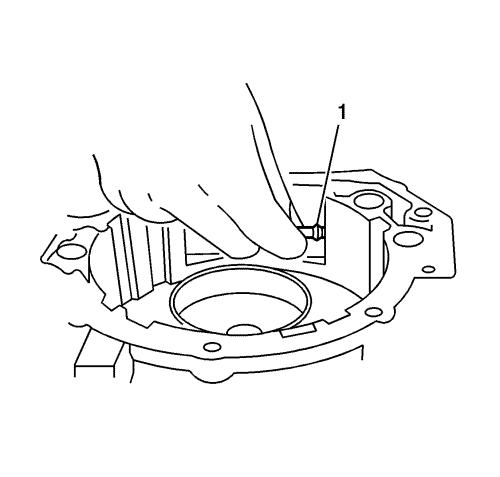
- Coloque el pasador de extremo de anclaje (1) de la cinta de freno en la carcasa.
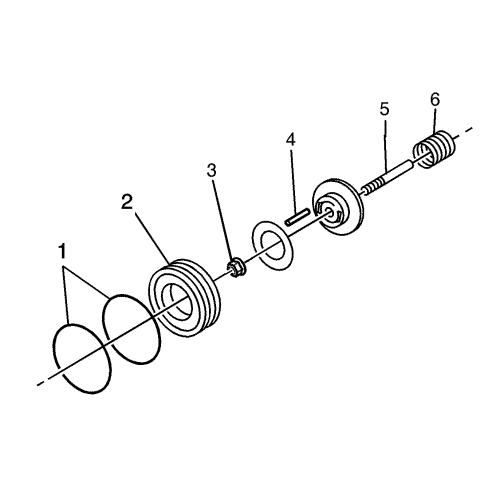
- Ponga ATF en la nueva junta tórica (1) y móntela luego en el pistón del servo de cinta (2).
- Fije el muelle (6) al centro del pistón con vaselina.
- Apriete suavemente la tuerca de extremo de anclaje (3) del eje del vástago del servo de cinta (5) para que no se caiga el pasador de ventilación de aire (4).
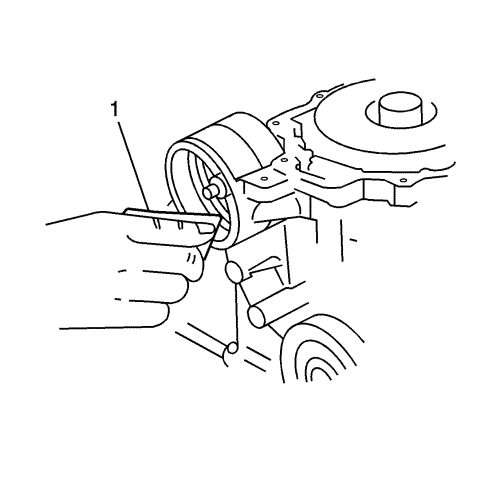
Nota: No se olvide de hacer esto para evitar que se rompa la junta tórica.
- Antes de montar la tapa del servo de cinta, elimine todos los arañazos de la superficie de la carcasa con papel de lija (1).
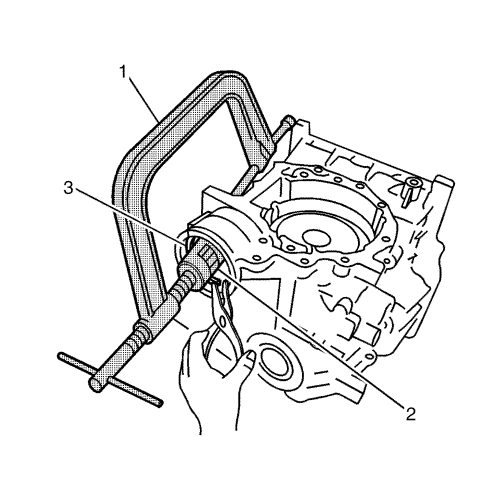
- Introduzca el pistón del servo de cinta en la carcasa y métalo en la ranura del anillo elástico de retención con la ayuda del empujador de válvula DT-47523 (1) y la fijación de empujador de válvula DT-47522 (2), y apriete luego el anillo elástico de retención (3).
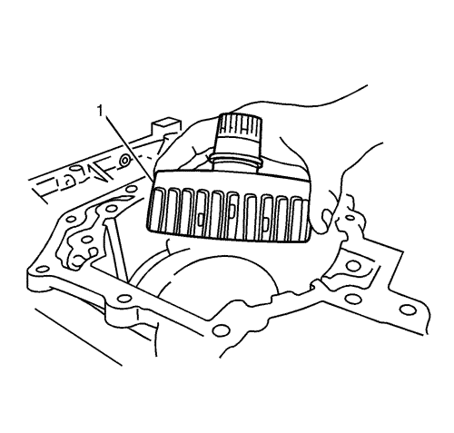
- Acople el cojinete al lado de la tapa lateral del conjunto del embrague de alta (1) con vaselina, y monte el conjunto del embrague de alta de modo que engrane con el cubo del embrague de alta.
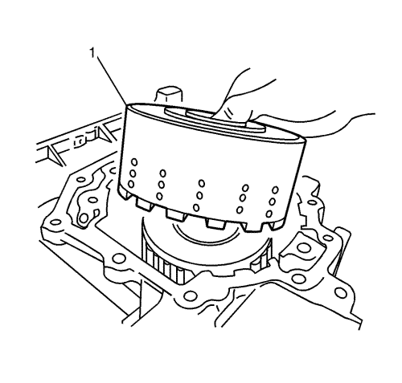
- Monte el tambor de embrague de marcha atrás (1) de modo que engrane con el cubo del embrague de alta.
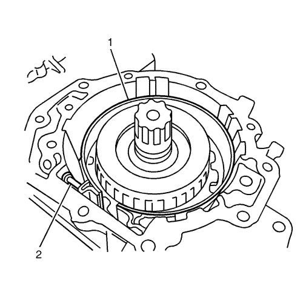
- Monte, a través del pasador de extremo de anclaje (2) y del pistón, la cinta de freno (1) a nivel con el embrague de marcha atrás. Apriete suavemente el pistón.
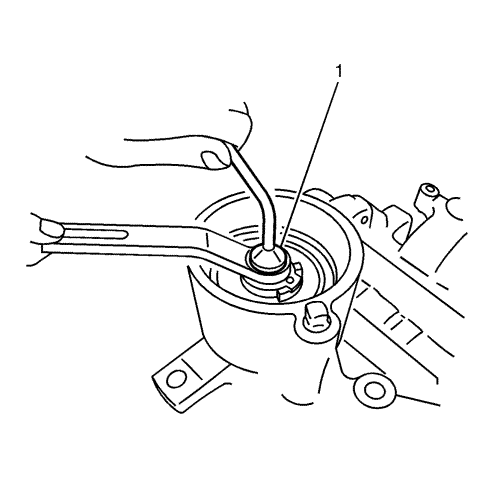
- Afloje la tuerca de extremo de anclaje cuanto sea posible. Apriete el vástago del servo de cinta a 3 N·m (27 lib. pulg.) ; desde esa posición, vuelva a aflojarlo luego 2,5 vueltas. Apriete la tuerca de extremo de anclaje a 33 N·m (24 lib. pie) mientras sujeta el vástago del pistón (1).
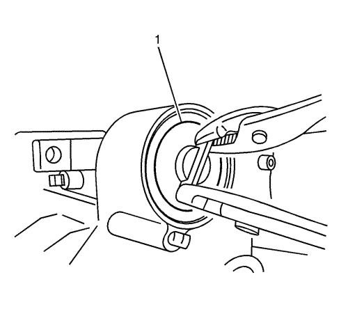
Nota: Antes de montar, ponga ATF en la junta tórica.
- Introduzca la tapa del servo de cinta (1) horizontalmente.
Nota: Asegúrese de que el anillo elástico de retención está completamente en la ranura.
- Monte el anillo elástico.
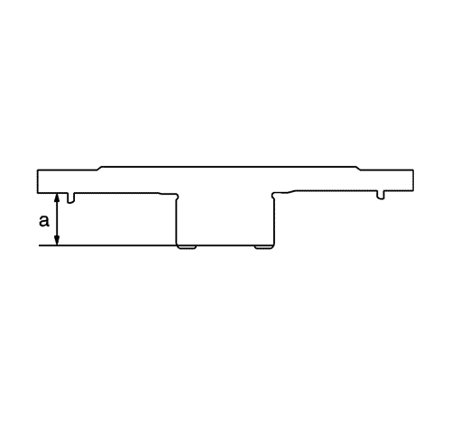
- Mida la holgura de la cubierta lateral y escoja una arandela de empuje apropiada.
- Mida la dimensión a desde la superficie de instalación de la carcasa de la tapa lateral hasta la superficie de sellado del cojinete de pista.
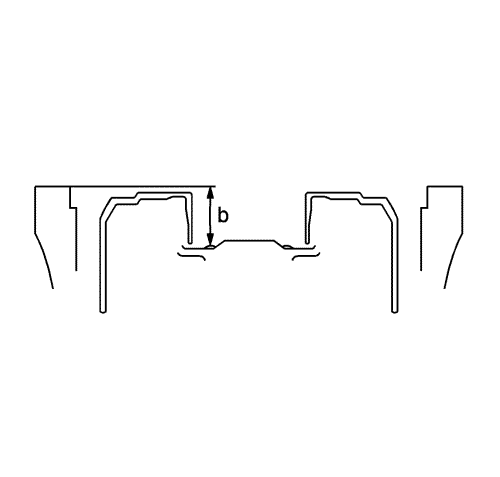
- Mida la dimensión b desde la superficie de instalación de la tapa lateral de la carcasa hasta la parte superior del cojinete del embrague de alta.
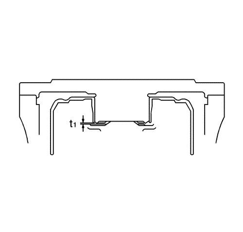
Nota: Si la Dimensión t1 no está dentro de la holgura especificada, sustituya el cojinete del embrague de alta por otro nuevo y vuelva a calcular la holgura. A continuación, seleccione una pista.
- Calcule la holgura usando la fórmula Dimensión b menos Dimensión a y seleccione una pista adecuada de forma que la Dimensión t1 tenga la holgura especificada.
Holgura
La holgura especificada de t1 es: 0,25-0,55 mm (0,010-0,02 pulg.)
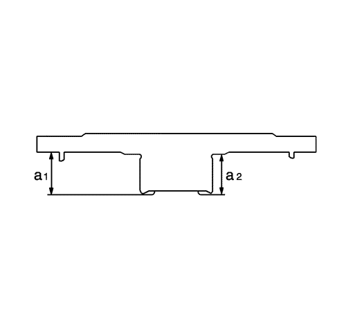
- Mida las Dimensiones a1 y a2 de la tapa lateral.
- Calcule la Dimensión a con la fórmula a2 -a1.
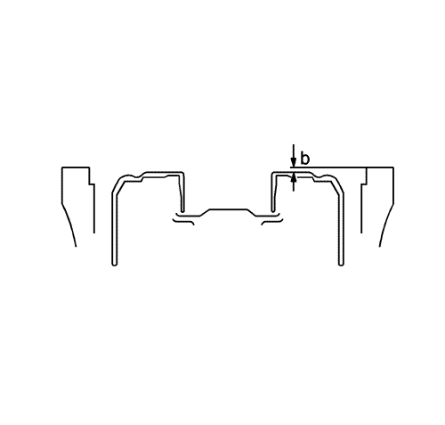
- Mida la Dimensión b desde la superficie de instalación de la tapa lateral de la carcasa hasta la superficie de asiento de la arandela del embrague de marcha atrás.
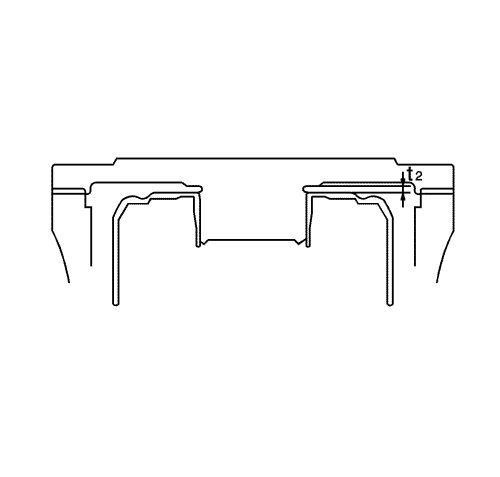
- Calcule la holgura usando la fórmula Dimensión b menos Dimensión a y seleccione una arandela de empuje adecuada de forma que la Dimensión t2 tenga la holgura especificada.
Holgura
La holgura especificada de t2 es: 0,55-0,90 mm (0,02-0,03 pulg.)
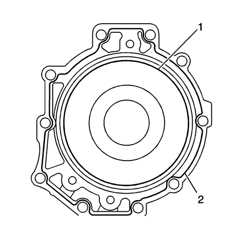
Nota:
| • | La capa de sellante debe ser lo suficiente ancha y gruesa, aproximadamente 2 mm (0,08 pulg.) de ancho y 1 mm (0,04 pulg.) de gruesa. |
| • | El sellante debe aplicarse uniformemente y a conciencia. |
- Aplique sellante (2) en la tapa lateral (1) como se muestra.
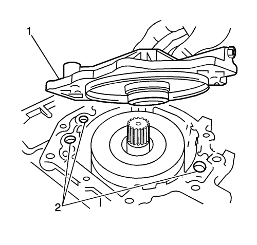
Nota: No vuelva a usar las juntas tóricas. Antes de montar, ponga ATF en las nuevas juntas tóricas antes de montar la tapa lateral (1).
- Coloque las tres juntas tóricas (2) en la carcasa.
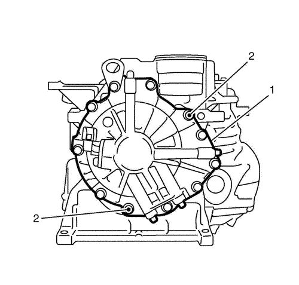
Nota:
| • | Tenga cuidado de no dañar los anillos de Teflon acoplados al embrague de alta y la tapa lateral. |
| • | Dos de los pernos de la tapa lateral (2) que fijan la tala lateral llevan sellante. |
| • | Asegúrese de posicionar la pista en la ranura de la parte inferior de la tapa lateral. |
| • | Asegúrese de sustituir el perno de la tapa lateral con uno nuevo, y de montarlo en la posición correcta. |
- Instale la tapa lateral (1) en la carcasa de la caja de cambios.
- Monte los pernos de la tapa lateral y apriételos hasta 21 N·m (15 lib. pie).
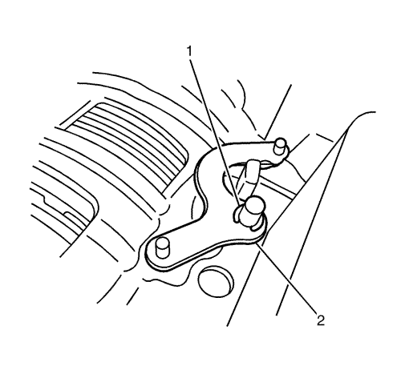
- Monte la varilla de estacionamiento (2) y la palanca de estacionamiento como un conjunto, y coloque el anillo en E (1).
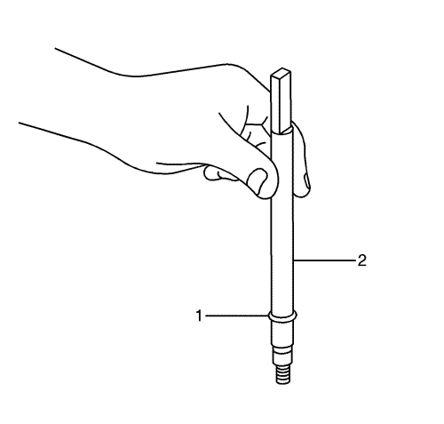
- Monte la junta tórica (1) en el eje manual e introduzca dicho eje (2) desde dentro de la carcasa.
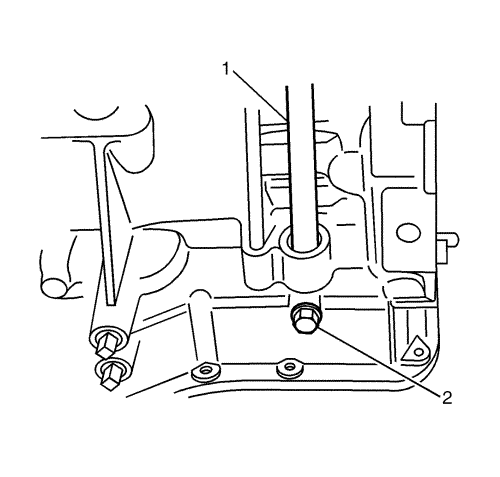
Nota: No vuelva a usar el tornillo de bloqueo ya que puede llevar adherido sellante.
- Monte el perno de bloqueo del eje manual (2) para arreglar el eje manual (1) y apriete a 7 N·m (62 lib. pulg.).
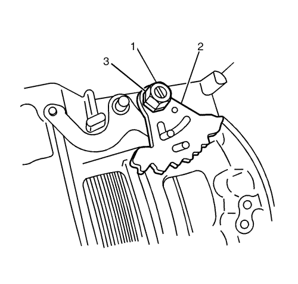
- Monte el plato manual (2) en el eje manual (1).
- Fije el eje manual fuera de la caja del cambio.
- Monte las 2 tuercas del plato manual (3) y apriételos a 13 N·m (115 lib. pulg.).
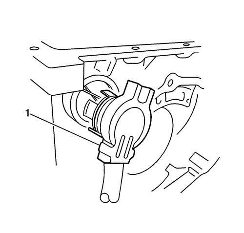
- Monte el conector (1) del solenoide en la carcasa.
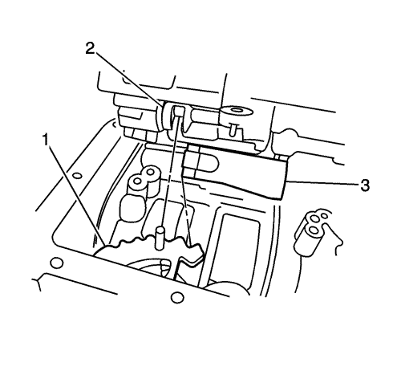
Nota:
| • | Asegúrese de que la válvula está fijada al pasador posicionador. |
| • | Una vez montada la válvula, asegúrese de nuevo con los dedos que la válvula manual está engranada con el pasador del plato manual. |
- Mientras sujeta el muelle de retención (3) sobre el plato manual (1), engrane la válvula manual (2) con el pasador del plato manual y monte el cuerpo de válvula de control.
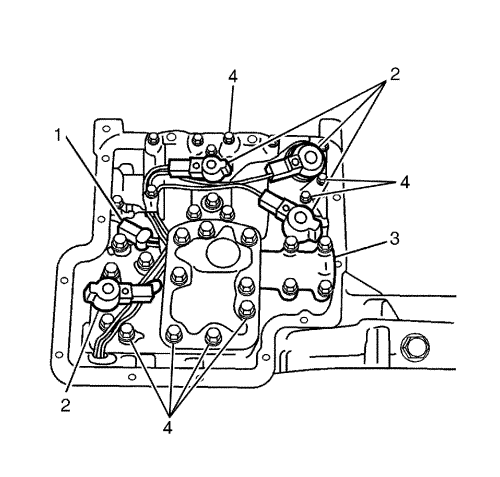
- Monte los 7 pernos del cuerpo de válvula de control (4) y apriételos hasta 8 N·m (71 lib. pulg.).
- Monte juntos el sensor de TFT (1) y el terminal de masa.
- Emborne el conector del mismo color en cada solenoide (2).
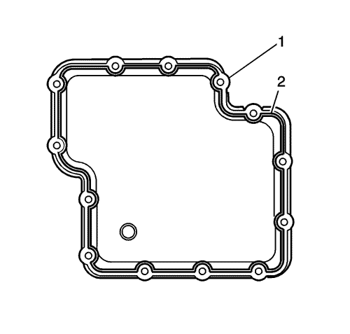
- Monte el imán en el cárter del aceite (1).
Nota:
| • | La capa de sellante debe ser lo suficiente ancha y gruesa, aproximadamente 3 mm (0,12 pulg.) de ancho y 1,5 mm (0,06 pulg.) de gruesa. |
| • | El sellante debe aplicarse uniformemente y a conciencia. |
- Aplique masilla (2) al cárter de aceite (1).
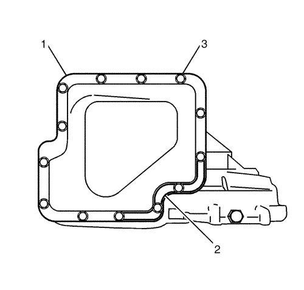
Nota: Los 4 tornillos que sujetan el refuerzo tienen longitudes distintas. Asegúrese de colocarlos en los sitios correctos.
- Al fijar el refuerzo (2) a los 4 pernos del cárter de aceite, monte los pernos del cárter de aceite (3) en el cárter de aceite (1) y apriete a 13 N·m (115 lib. pulg.).
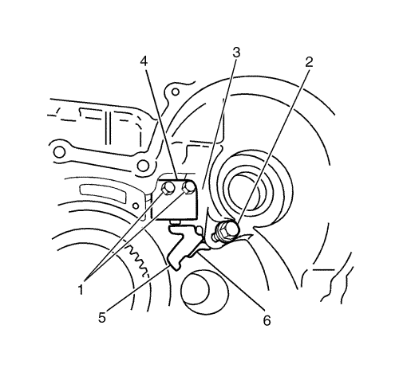
- Coloque el trinquete (4), el muelle del trinquete (5) y el collarín del trinquete de estacionamiento en el orificio, e introduzca el eje del trinquete de estacionamiento para fijarlos.
- Instale el actuador del soporte (3).
- Monte los pernos del actuador del soporte (1) y apriételos hasta 27 N·m (20 lib. pie).
- Monte el perno del tope (2) en el trinquete de estacionamiento y apriételo a 5 N·m (44 lib. pie).
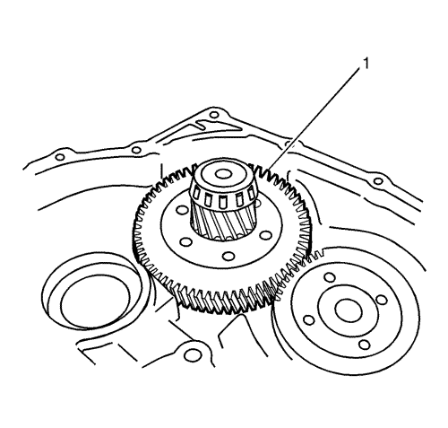
- Monte el engranaje reductor (1) con la campana del convertidor mirando hacia arriba.
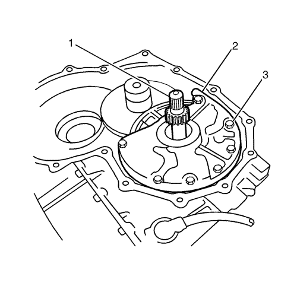
Nota:
| • | No vuelva a usar la arandela de junta del eje primario. Ponga ATF en la arandela de junta nueva antes de montarla. |
| • | No vuelva a usar la junta tórica. Antes de montar, ponga ATF en la junta tórica nueva. |
- Introduzca el eje primario en el centro del piñón secundario.
- Monte la bomba de aceite (2).
- Monte los tornillos (3) de la bomba de aceite y apriételos a 13 N·m (115 lib. pulg.).
- Monte el aro tórico de entrada (1) en el eje primario.
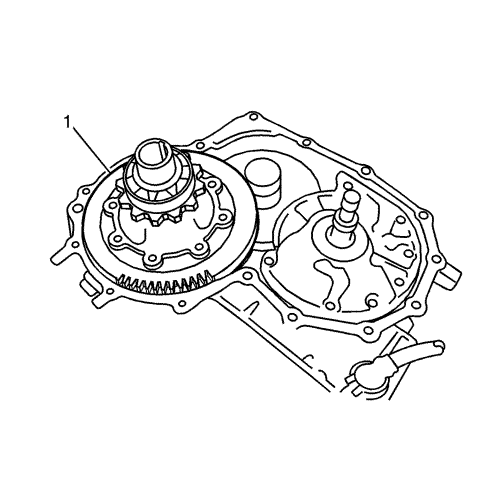
Nota: Asegúrese de que el conjunto del diferencial está a nivel con el engranaje reductor.
- Monte el conjunto del diferencial (1) de modo que se engrane con el engranaje reductor.
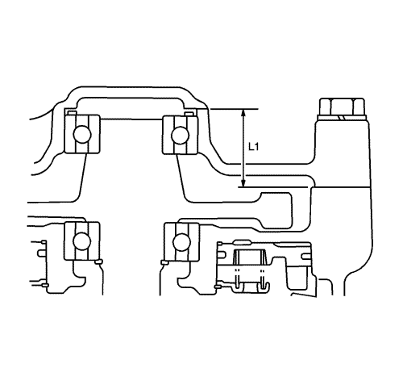
- Seleccione un suplemento para el conjunto del diferencial.
- Mida la dimensión L1 desde la superficie de instalación de la carcasa de la campana del convertidor hasta a superficie de asiento del cojinete de suplemento.
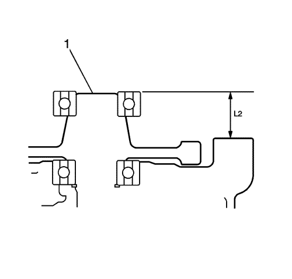
- Mida la dimensión L2 desde la superficie de instalación de la campana del convertidor de la carcasa hasta la parte superior del cojinete del lado del conjunto del diferencial (1).
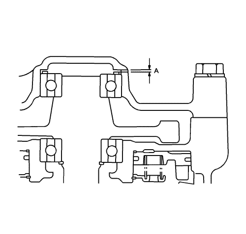
- Calcule la holgura usando la fórmula dimensión L1 menos dimensión L2 y seleccione una chapa adecuada de forma que la dimensión A tenga la holgura especificada.
Holgura
La holgura especificada es A: 0--0,1 mm (0--0,004 pulg.)
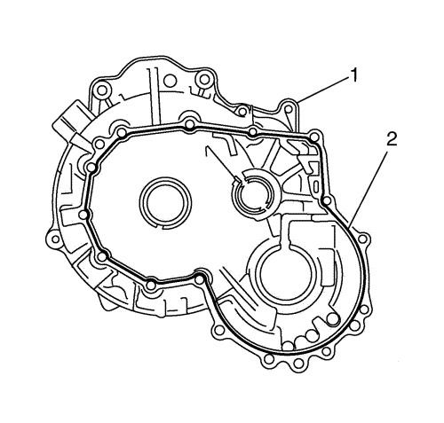
Nota:
| • | La capa de sellante debe ser lo suficiente ancha y gruesa, aproximadamente 2 mm (0,08 pulg.) de ancho y 1 mm (0,04 pulg.) de gruesa. |
| • | El sellante debe aplicarse uniformemente y a conciencia. |
- Aplique sellante (2) a la carcasa del convertidor (1).
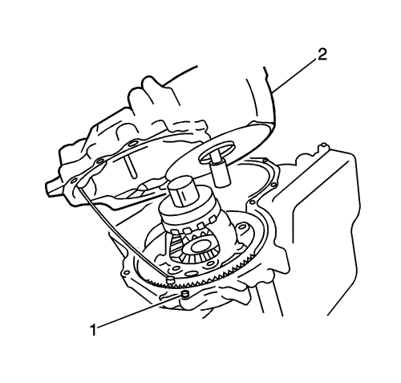
- Monte la campana del convertidor (2) alineándola con el pasador de alineación (1).
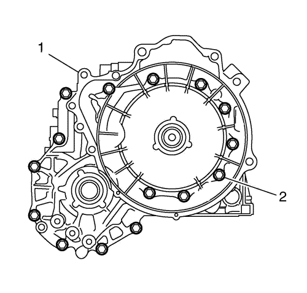
Nota:
| • | Uno de los pernos que fijan la carcasa del convertidor (1) es un perno con sellante (2). |
| • | Asegúrese de sustituir el perno con uno nuevo, y de montarlo en la posición correcta. |
- Monte los pernos de la carcasa del convertidor (2) y apriételos hasta 30 N·m (22 lib. pie).
- Instale el sensor de velocidad de salida (2).
- Monte el perno del sensor de velocidad de salida (1) y apriételo hasta 7 N·m (62 lib. pulg.).
- Monte el sensor de revoluciones de entrada (2).
- Monte el perno del sensor de velocidad de entrada (1) y apriételo hasta 6 N·m (53 lib. pulg.).
- Monte el selector de posicion de estacionamiento/punto muerto (PNP) por el eje manual y apriete provisionalmente los pernos.
- Monte la palanca selectora de rango (3) en el eje manual, y monte el pasador de la palanca selectora (2).
- Mueva la palanca selectora de rango (2) a punto muerto (Neutral).
- Inserte un pasador de 3 mm (0,11 pulg.) (broca de taladro) (1) en los agujeros de posicionamiento del selector PNP (3) y la palanca selectora de rango.
- Monte los pernos del selector de PNP (4) y apriételos a 3 N·m (27 lib. pulg.).
Nota:
| • | No desmonte la tapa del respiradero de aire cuando en el interior de la caja de cambios está desmontada. |
| • | Cuando se coloque la tapa del respiradero de aire, debe ponerse sellante en la tapa para no dañarla al apretar los tornillos. |
| • | La capa de sellante debería tener aproximadamente 1,6 mm (0,06 pulg.) de ancho y 1 mm (0,04 pulg.) de gruesa. |
| • | El sellante debe aplicarse uniformemente y a conciencia. |
- Aplique sellante (2) a la tapa del respiradero de aire (1).
- Instale la tapa del respiradero de aire (1) en la carcasa de la caja de cambios.
- Monte los tornillos (2) de la tapa del respiradero de áire y apriételos a 12 N·m (106 lib. pulg.).
Nota:
| • | Antes del montaje, una la junta tórica al refrigerador de aceite con vaselina. |
| • | No vuelva a usar la junta tórica. |
- Alinee la sección convexa del refrigerador de aceite con el rebaje de la carcasa (1).
- Monte el perno del refrigerador de aceite (2) y apriételo hasta 35 N·m (26 lib. pie).
- Monte el tubo de llenado del aceite (2) en la carcasa y fíjelo a ésta junto al conector del solenoide.
- Monte el perno del tubo de llenado (1) de la bomba de aceite y apriételos a 7 N·m (62 lib. pulg.).
- Monte el soporte lateral de la caja del cambio (3), el perno de soporte (1) y apriete a 13 N·m (115 lb in).
- Monte el soporte lateral de la carcasa del convertidos (4), el perno de soporte (2) y apriete a 44 N·m (33 lb pie).
- Monte el soporte del cable de la palanca de selección de posición (6).
- Monte los pernos del soporte del cable de la palanca selectora de la posición del cambio (5) y apriete a 19 N·m (14 lib. pie).
- Monte el soporte del conector del terminal (1), el perno del soporte del conector (2) y apriete a 44 N·m (33 lib. pie).
Nota: Vierta ATF de modo que no salpique ATF al ajustar el convertidor de par (1).
- Monte el convertidor de par (1), gírelo hasta que el corte del manguito del convertidor quede alineado con el eje primario.
- Mida la dimensión A desde el borde del convertidor hasta el borde de la carcasa para asegurarse de que el convertidor está bien montado.
Medida de separación
La dimensión A es 23,7 mm o más (0,9 pulg. o más).
- Monte el convertidor de par (1).